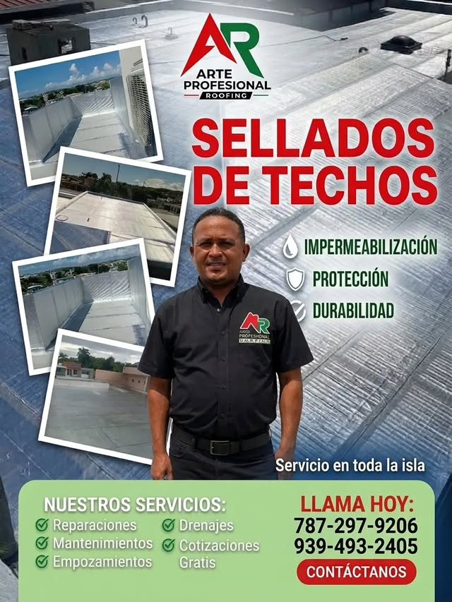
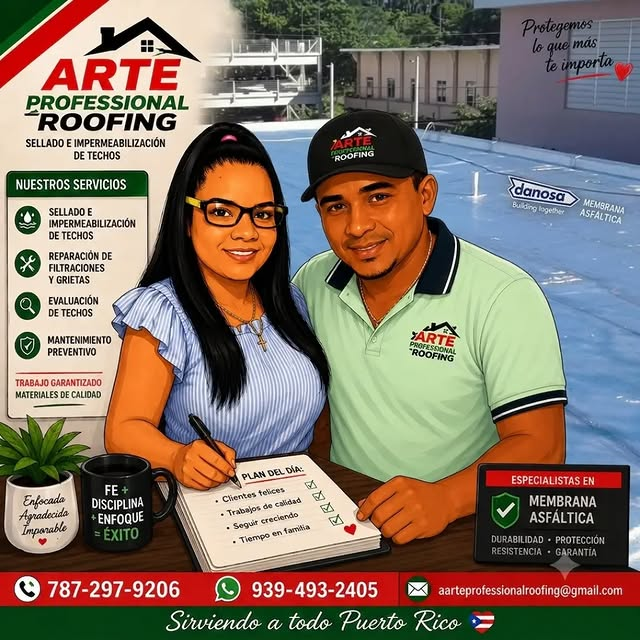
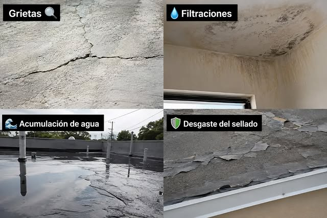
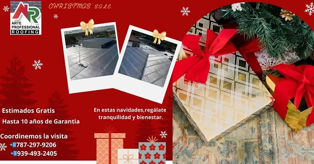
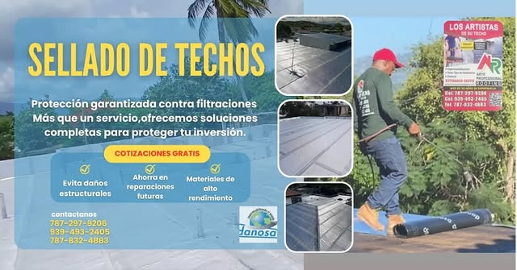
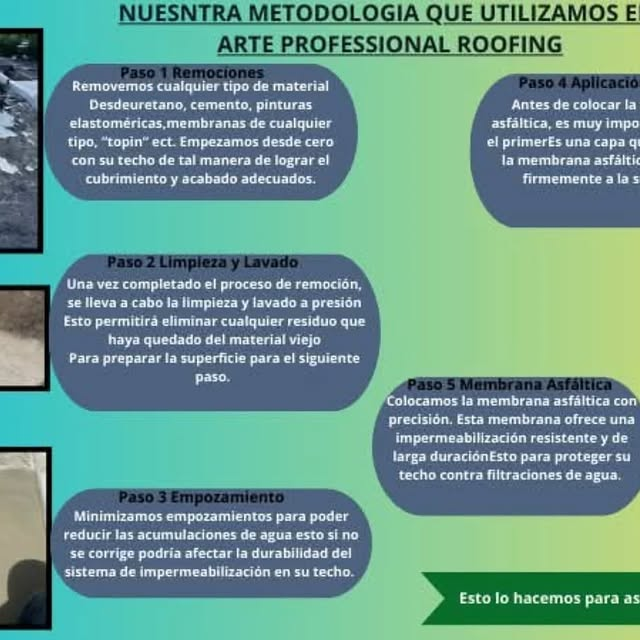
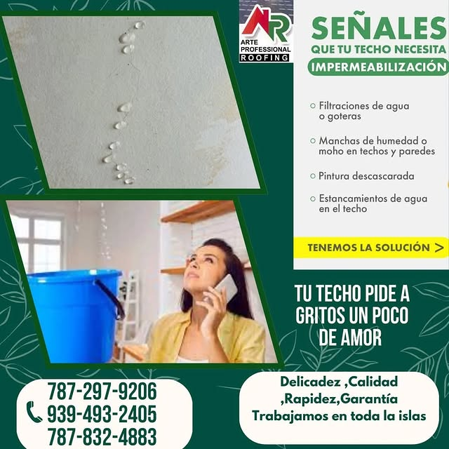
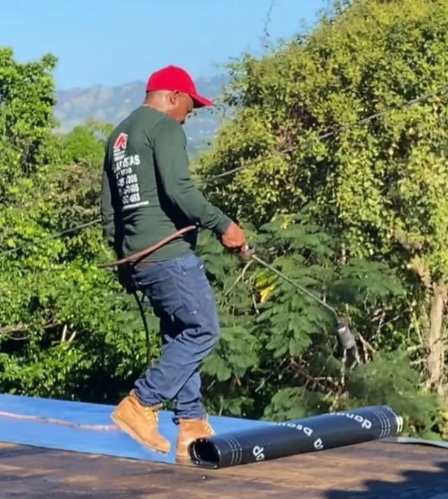
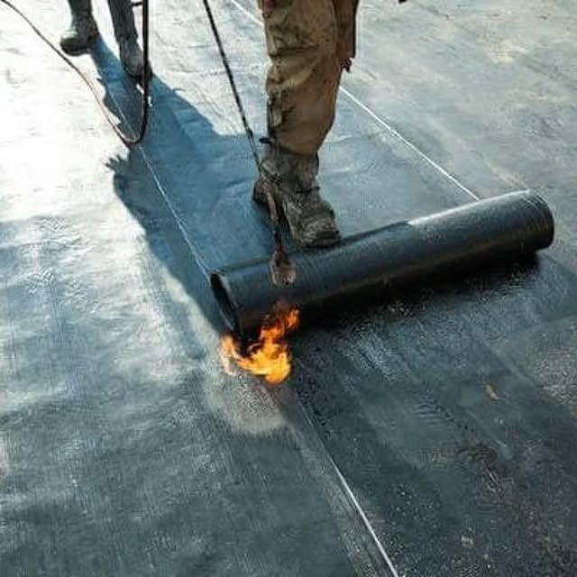

Arte
ArteReal
Mayagüez · Puerto Rico
Arte Roofing
EL ARTE DE SELLAR BIEN
Sellado artesanal en Mayagüez, con detalle en cada grieta y hasta 12 años de protección.
ArteMayagüez · Puerto Rico
EL ARTE DE SELLAR BIEN
Sellado artesanal en Mayagüez, con detalle en cada grieta y hasta 12 años de protección.
Lo que hacemos



Impermeabilización completa con sello de calidad artesanal.


Localizamos y corregimos filtraciones y grietas desde la raíz.


Evaluamos tu techo y cotizamos sin costo ni compromiso.


Sellado profesional con protección duradera para tu techo.
Galería

Quiénes somos
Arte Professional Roofing, en Mayagüez: el sellado de techos como un arte. Impermeabilización, reparación de filtraciones y grietas con detalle artesanal, hasta 12 años de protección y estimados gratis.
Llamar 787-297-9206Preguntas frecuentes
Estamos en Mayagüez, Puerto Rico.
Sellado e impermeabilización de techos y más: Sellado e impermeabilización, Reparación de filtraciones, Estimados gratis.
Escríbenos por WhatsApp al 787-297-9206 o llena el formulario de contacto y te respondemos por WhatsApp.
Sí, síguenos en Instagram como @arteprofessionalroofing.
Hasta 12 años de protección con estimados gratis en Mayagüez: 787-297-9206.
El taller del artesano
Sellado artesanal · @arteprofessionalroofing · Mayagüez